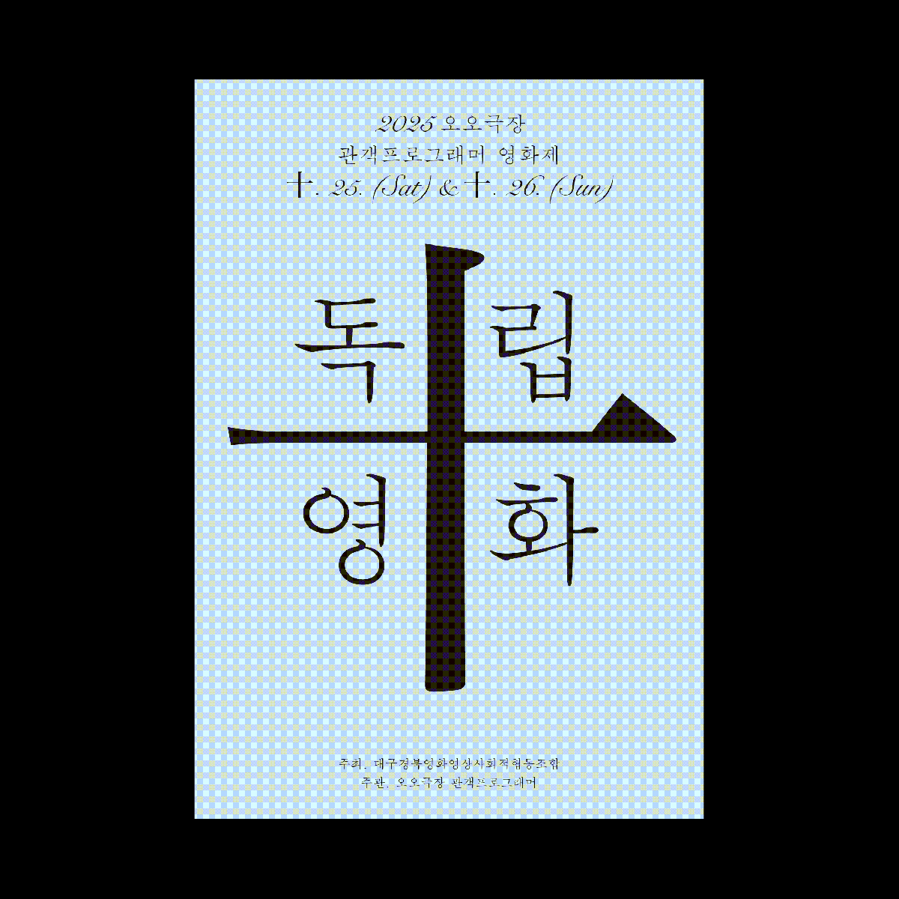

기획전 · 행사 · 기획전
관객프로그래머 영화제 – 十 독립영화 10/25(토) ~ 26(일)

오오극장의 10년, 그 시점에서 우리의 질문은 시작한다. 함께 흐른 한국독립영화의 10년은 어떠했나? 10년이면 강산이 변한다고, 한국독립영화계에도 많은 변화가 있었다. 변화? 어떤 변화들이 있었지? 이번 관객프로그래머 영화제에서는 지난 10년간 독립영화계에 있었던 변화의 물줄기를 다양한 영화인들과 함께 반추하고 톺아보려한다. 10년동안 목격할 수 있었던 독립영화의 얼굴들, 관점들을 되돌아보며 10(十)년이란 세월이 그 수를 넘어 더하기(+)로 진보될 수 있도록, 그 계기를 이번 영화제를 통해 마련해본다.